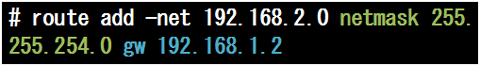

- 問題ID : 21755 高度なネットワーク構成
- 履歴
正解
route
解説
ルーティングテーブルに関する操作を行うには route コマンドを使います。
引数を書かなければルーティングテーブルの表示を行う動作になります。
したがってこの問題で問われているコマンドは
・route
であるとわかります。
route コマンドの書式の詳細については以下の参考をご覧ください。
その他の選択肢のコマンドについて解説します。
・ifconfig
ネットワークインタフェースに関して表示・操作を行うことができるコマンドですが、ルーティングテーブルに関する機能は持っていないので、誤りです。
・traceroute
指定したホストまでの経路（中継したルータ）の一覧を表示するためのコマンドですが、自ホストにおけるルーティングテーブルを表示・操作するような機能はないため、誤りです。
・ping
ping コマンドは ICMP パケットを送信することで対象ホストへの疎通確認を行うコマンドですが、ルーティングテーブルに関する機能は持っていないので、誤りです。
このようにネットワーク関連の設定を行うコマンドには多くのものがありますが、何を対象にして操作を行うのかで区別して覚えておきましょう。
参考
【ルーティングテーブルの操作】
パケット転送において、パケットは多くの中継装置（ルータ）によって対象ホストまで運ばれていきます。
その中継の際、目的のホストにパケットを届けるには次にどこへ向かってパケットを転送すればよいかという経路の判断が必要になります。
その判断を行い、適切な経路へパケットを送信することをルーティングといい、そのための情報をルーティングテーブルといいます。
ルーティングテーブルに関する操作を行うには route コマンドを使います。
routeコマンドの書式は以下のとおりです。
表示
route
追加
route add [-host|-net] 宛先アドレス gw ゲートウェイのIPアドレス
削除
route del [-host|-net] 宛先アドレス [gw ゲートウェイのIPアドレス]
追加・削除の場合の宛先アドレスは、以下の形式等が可能です。
IPアドレス/プレフィックス
IPアドレス netmask サブネットマスク
デフォルトゲートウェイ設定
route add default gw デフォルトゲートウェイのIPアドレス
引数を書かなければルーティングテーブルの表示を行う動作になります。
そして、第一引数を add や del とすれば新しい経路を追加・削除できます。
追加や削除の際には追加する経路がホスト単位なのか (-host)、サブネット単位なのか (-net) も指定します。
追加の場合は、最低限、ゲートウェイアドレスと、プレフィックスまたはサブネットマスクを指定します。

削除の場合は、識別が可能な場合は宛先アドレスだけでの削除も可能です。
最後に、少し特別な指定の仕方として、デフォルトゲートウェイの設定方法があります
この場合 -host や -net とそれに続く 宛先アドレスは指定せず、default というキーワードを代わりに書きます。
以上のように route コマンドはやや複雑な書式になっています。それぞれの書式を正しく読み書きできるようにしておきましょう。
なお、ディストリビューションによっては様々なネットワーク関連の操作を行うフロントエンドコマンドとして ip というコマンドが用意されていることがあります。
このコマンドを使っても route と同様の機能を利用することが可能です。その場合には ip コマンドの第一引数に route と指定します。
以下はip routeコマンドの書式です。
ルート表示
ip route [show(list)]
ルート設定 追加
ip route add 宛先アドレス via ゲートウェイのアドレス
ルート設定 削除
ip route del 宛先アドレス [via ゲートウェイのアドレス]
routeコマンド同様、削除の場合は、識別が可能な場合は宛先アドレスだけでの削除も可能です。
追加・削除の場合の宛先アドレスは、以下の形式が可能です。
IPアドレス/プレフィックス
デフォルトゲートウェイの追加と削除
ip route { add | del } default via デフォルトゲートウェイのアドレス
または
ip route del default